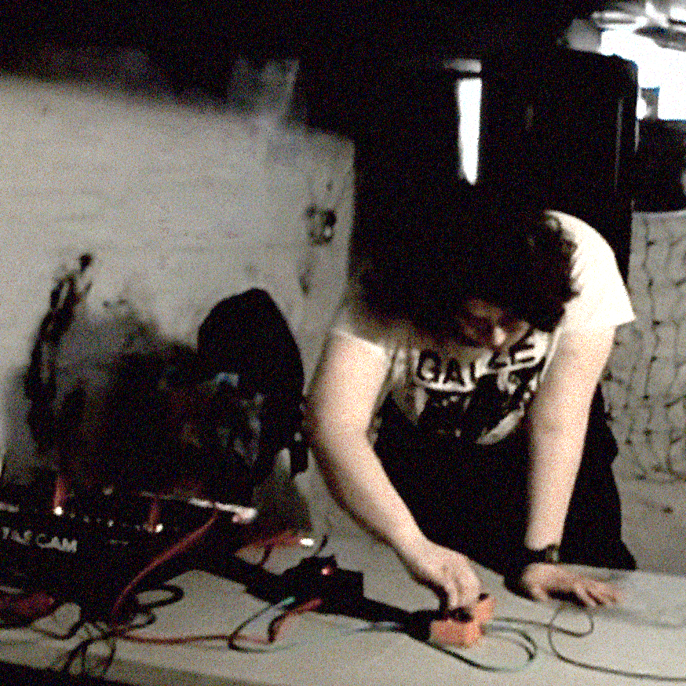

TERRA HOSTILIS

https://knucklecrosser.bandcamp.com
Terra Hostilis is a project by Magpie from Pittsburgh, transmitting
signals from the cracks of society in collaboration and harmony with the
organs of an indifferent Leviathan. Terra Hostilis is a compulsion to
bite the hand that feeds and throw itself against the bars of its cage
in equal parts spiteful attack and juvenile refusal. Terra Hostilis is
an articulation of trembling awe at the something horrifying and total,
and an attempt to find shelter in its hulking mass.
Terra hostilis is
much larger than the combined function of the organs that sustain it.
Terra hostilis marches to the beat of its own annihilation. Terra
hostilis sings in a constant death rattle. Terra hostilis is the only
place we can ever possibly find ourselves.